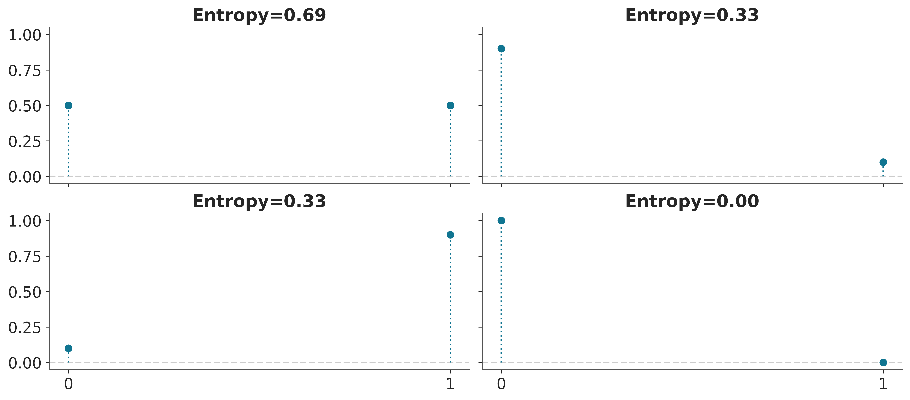
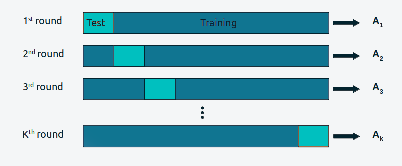
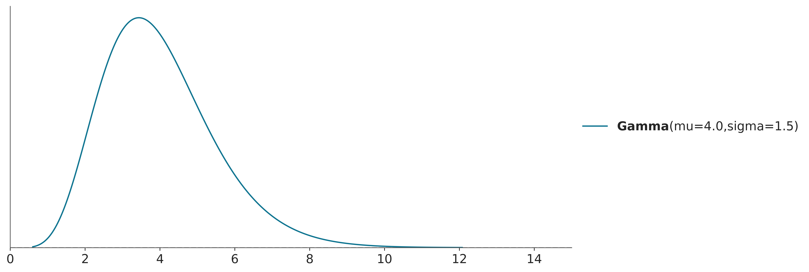

WARNING (pytensor.tensor.blas): Using NumPy C-API based implementation for BLAS functions.6 Model comparison
6.0.1 The balance between simplicity and accuracy
When choosing between alternative explanations, there is a principle known as Occam’s razor. In very general terms, this principle establishes that given two or more equivalent explanations for the same phenomenon, the simplest one is the preferred explanation. When the explanations are models, a common criterion for simplicity is the number of parameters in a model.
Another factor we generally need to consider when comparing models is their accuracy, that is, how good a model is at fitting the data. According to this criterion, if we have two (or more) models and one of them explains the data better than the other, then that is the preferred model.
Intuitively, it seems that when comparing models, we tend to prefer those that fit the data best and those that are simpler. But what to do if these two principles conflict? Or more generally, is there a quantitative way to consider both contributions? The short answer is yes. In fact there is more than one way to do it.
6.0.2 Predictive accuracy measures
If we evaluate a model solelly by it capacity to reproduce the data used to fit it, for instance by measuring the mean quadratic error between observations and predictions, we will lieklly be overoptimistic about the performance of the model to predict unobserved data. Additionally, for a flexible enough model (and without proper regularization), we may tweak it parameters until we fit the data perfectly. Thus, instead of computing the Within-sample accuracy, that is, the accuracy measured with the same data used to fit the model, we prefer to compute the Out-of-sample accuracy, that is, the accuracy measured with data not used to fit the model.
Note
Bayesian models trough the use of prior, and the fact that the posterior is computed by marginalizing over those priors, is usually less prone to overfitting than alternative methods. But it is not true that we can not overfit Bayesian models. That will only be true when our model represents the true generating process of the data, an scenario that is extremelly uncommon. Thus, in practice we often end up needing to compare Bayesian models using some measure of predictive performace or predictive accuracy.
The easier way to compute out-of-sample accuracy is two have at least two datasets, once we use to fit the models, and one we use to evaluate them. There are even more complex ways to partion the data, but the main point for our current discussion is that usually that’s a luxury. Data is valuable, and not using all data to fit models can be a waste of information and resources. As this is a permasive situation in data analysis, many different metohds have been developed in order to evaluate the predictive accuracy of models without wasting data.
We re going to discuss two family of methods:
Cross-validation: This is an empirical strategy based on dividing the available data into separate subsets that are used to fit and evaluate alternatively. So this is a way to simulate having a hould-out dataset for model evaluation, but actually using all the available data for inference.
Information criteria: This is a general term used to refer to various expressions that approximate out-of-sample accuracy as in-sample accuracy plus a term that penalizes model complexity.
6.0.3 Information criteria
Information criteria are a collection of closely related tools used to compare models in terms of goodness of fit and model complexity. In other words, information criteria formalize the intuition we developed at the beginning of the chapter. The exact way these quantities are derived has to do with a field known as Information Theory.
An intuitive way to measure how well a model fits the data is to calculate the root mean square error between the data and the predictions made by the model:
\[ \frac{1}{N} \sum _{i}^{N} (y_i - \operatorname{E} (y_i \mid \theta))^2 \]
\(\operatorname{E} (y_i \mid \theta)\) is the predicted value given the estimated parameters. It is important to note that this is essentially the average of the difference between the observed and predicted data. Taking the square of the errors ensures that differences do not cancel out and emphasizes larger errors compared to other alternatives such as calculating the absolute value.
The mean square error may be familiar to us since it is very popular. But if we stop and reflect on this quantity we will see that in principle there is nothing special about it and we could well come up with more general expressions.
6.0.4 Entropy
For a probability distribution with \(N\) possible different events which each possible event having probability \(p_i\), the entropy is defined as:
\[ H(p) = - \mathbb{E}[\log{p}] = -\sum_i^N p_i \log{p_i} \]
Entropy is a measure of the uncertainty of a distribution. In this sense we can say that the uncertainty contained in a distribution is the logarithm of the average probability of an event. If only one event is possible the entropy will be 0, if all events have the same probability the entropy will be maximum. The concept of entropy can be extended to continuous distributions, but we will not go into those details. Figure Figure 6.1 shows the entropy of a Bernoulli distribution for four different values of the probability of success. We can see that the entropy is maximum when the probability of success is 0.5 and minimum when the probability of success is 0.
Code

The concept of entropy appears many times in statistics. It can be useful, for example when defining priors. In general we want to use a prior that has maximum entropy given our knowledge (see for example PreliZ’s maxent function). And also when comparing models. Let’s see.
Suppose we have a target distribution \(p\), with which we cannot work directly and we only have access to \(q\). We want to evaluate how well \(q\) approximates \(p\), or whether \(q\) is a parametric family find what parameters make \(q\) as close to \(p\) as possible. One way to do this is to measure the Kulback-Leibler divergence:
\[ \mathbb{KL}(p \parallel q) = \overbrace{-\sum_i^N p_i \log{q_i}}^{H(p, q)} - \overbrace{\left(-\sum_{i}^n p_i \log{p_i}\right)}^{H(p)} \]
Notice that it has two components, the entropy of \(p\), \(H(p)\) and the cross entropy \(H(p, q)\), that is, the entropy of \(q\) but evaluated according to \(p\). This may seem somewhat abstract, but if we think that we have \(N\) samples that we assume come from an unknown distribution \(p\) and we have a model described by \(q(y \mid \theta)\), then we will see that we are describing a typical situation in data analysis.
According to this expression, the KL divergence represents the “extra” entropy that we introduce when approximating \(p\) by \(q\). It is common to find it written in other ways, such as:
\[ \mathbb{KL}(p \parallel q) \quad=\quad- \sum_i^N p_i (\log{q_i} - \log{p_i}) \quad=\quad \mathbb{E}_p[\log{p}] - \mathbb{E}_p[\log{q}] \quad=\quad \sum_i^N p_i \log{\frac{p_i}{q_i}} \]
All equivalent and useful forms depending on context. Something common in all these expressions is that we cannot apply directly if \(p\) is unknown. For example, if \(p\) represents the data generating process or the population or the true distribution, we are lost… But, if what we are interested in is comparing models we will see that NO Direct calculation is necessary, the reason is that even when we do not know \(p\), its entropy is a constant term.
\[ \begin{split} \mathbb{KL}(p \parallel q_0) =&\; \mathbb{E}[\log{p}] - \mathbb{E}[\log{q(y \mid \theta_0)}] \\ \mathbb{KL}(p \parallel q_1) =&\; \mathbb{E}[\log{p}] - \mathbb{E}[\log{q(y \mid \theta_1)}] \\ &\cdots \\ \mathbb{KL}(p \parallel q_2) =&\; \mathbb{E}[\log{p}] - \mathbb{E}[\log{q(y \mid \theta_2)}] \end{split} \]
If we compare models then the best model, given the set of compared models, will be the one that has a larger likelihood value. In other words, mimicking KL divergence is proportional to maximizing likelihood.
In practice we also do not have access to \(\mathbb{E}[\log{q}]\), what we can do is estimate this quantity from a sample. Since we already know how to use a sample to estimate the parameters of a model and using the same sample to evaluate it introduces a bias, which we must somehow correct. One way to correct this bias is given by the information criteria.
6.0.4.1 Akaike information criterion
This is a very well-known and widely used information criterion outside the Bayesian universe and is defined as:
\[ AIC = -2 \sum_i^N \log p(y_i \mid \hat{\theta}_{mle}) + 2 k \]
Where, \(k\) is the number of model parameters and \(\hat{\theta}_{mle}\) is the maximum likelihood estimate for \(\theta\). For the rest of our discussion we will omit the constant -2 and write
\[ AIC = \sum_i^N \log p(y_i \mid \hat{\theta}_{mle}) - k \]
In this way it is easier to see that the Akaike criterion is a penalized maximum likelihood, because it becomes smaller the more parameters a model has. Furthermore, this version without the -2 has a clearer correspondence with other expressions which we will see below.
Note
That the number of parameters is a valid penalty criterion follows our intuition, a model with a greater number of parameters is, in general, more flexible. But it is interesting to note that Akaike’s criterion has a theoretical justification, it is not that Akaike simply thought that using \(k\) was a good idea.
The AIC criterion is very useful, but have many issues for Bayesian models. One reason is that it uses a point estimate of \(\theta\) and not the posterior distribution, hence it discards potentially useful information. Furthermore AIC, from a Bayesian perspective, assumes that priors are flat and therefore AIC is incompatible with informative and/or weackly informative priors. Furthermore, the number of parameters in a model is not always a good measure of its complexity. When using informative priors or in hierarchical models, parameters becomes interrelated and thus the effective number of parameters can be smaller than the actual number of parameter. In general, a regularized model will be a model with less effective number of parameters.
Can we find something like the Bayesian version of AIC? Yes, we can.
6.0.5 WAIC
We can see the Widely applicable information criterion (WAIC) as the fully Bayesian version of AIC. Not to be confused with the Bayesian Information Criterion (BIC), which is not very Bayesian in practice.
Anyway, as we already saw in the Akaike criterion, the goodness of fit is given by:
\[ \sum_i^N \log p(y_i \mid \hat{\theta}_{mle}) \]
But in Bayesian statistics, we do NOT have a point estimate of \(\theta\). We have a distribution, so we should do:
\[ \sum_i^N \log \int \ p(y_i \mid \theta) \; p(\theta \mid y) d\theta \]
In general we do not have an analytical expression for the posterior, \(p(\theta \mid y)\) instead we usually work with samples (such as those obtained by MCMC), then we can approximate the integral by:
\[ \sum_i^N \log \left(\frac{1}{S} \sum _{j}^S p(y_i \mid \theta^j) \right) \]
We will call this quantity ELPD, which is short for expected log-predictive density. When the likelihood is discrete, we should use “probability” instead of “density”, but it is a common practive to avoid pedantery.
OK, now we have Bayesian way to measure goodness of fit. Now we need a term that penalizes the complexity of the model. Finding the correct expression for this requires work, so we are going to present it without justifying.
\[ WAIC = \sum_i^N \log \left(\frac{1}{S} \sum _{s}^S p(y_i \mid \theta^j) \right) - \sum_i^N \left( V_{j}^S \log p(y_i \mid \theta^j) \right) \]
Where the penalty term is given by the variance of the log-likelihoods over the \(S\) samples of the posterior. Intuitively, the term penalizes models that have a lot of variability in their predictions. Let’s look at a linear model as an example:
\[ Y = \alpha + \beta X \]
A model where \(\beta=0\) will be less flexible, since it is equivalent to a model that only has one parameter, \(alpha\). In a slightly more subtle way, a model where \(\beta\) varies in a narrow range will be less flexible (more regularized), than a model where \(\beta\) can take any value.
6.0.6 Cross validation
Cross-validation is a simple and, in most cases, effective solution for comparing models. We take our data and divide it into \(K\) slices. We try to keep the portions more or less the same (in size and sometimes also in other characteristics, such as an equal number of classes). We then use \(K-1\) portions to train the model and the rest to evaluate it. This process is systematically repeated leaving, for each iteration, a different portion out of the training set and using that portion as the evaluation set. This is repeated until we have completed \(K\) rounds of adjustment-evaluation. The accuracy of the model will be the average over the \(K\) rounds. This is known as K-fold cross validation. Finally, once we have cross-validated, we use all the data to final fit our model and this is the model that is used to make predictions or for any other purpose.

When \(K\) is equal to the number of data points, we get what is known as leave-one-out cross-validation (LOOCV).
Cross validation is a routine practice in machine learning. And we have barely described the most essential aspects of this practice. For more information you can read The Hundred-Page Machine Learning Book or Python Machine Learning, by Sebastian Raschka.
Cross-validation is a very simple and useful idea, but for some models or for large amounts of data, the computational cost of cross-validation may be beyond our means. But lucky us, by being bayesian we can approximattelly compute CV in a very fast way.
6.0.7 LOO and cross validation
There is another alternative to penalize the term
\[ \sum_i^N \log \left(\frac{1}{S} \sum _{j}^S p(y_i \mid \theta^j) \right) \]
It can be done by computing
\[ \sum_i^N \log \left( \frac{1}{S}\sum_j^S \mathbin{\color{#E9692C}{p(y_i \mid \theta _{-i}^j)}} \right) \]
where \(_{-i}\) means that we leave observation \(i\) out. A Naive implementation of this estimation requires that we estimate as many posterior distributions as observations we have, since for each of them we will eliminate one observation. However, this is not necessary since it is possible to estimate \(\color{#E9692C}{p(y_i \mid \theta _{-i}^j})\) using Importance Sampling.
Before continuing with our agenda, we need to take a short detour.
6.0.7.1 Importance Sampling
This is a technique for estimating properties of a distribution of interest \(f\), given that we only have samples from a distribution \(g\). Using importance sampling makes sense, for example, when it is simpler to sample \(g\) than \(f\).
If we have a set of samples of the random variable \(X\) and we can evaluate \(g\) and \(f\) point-wise, we can calculate the importance weights as:
\[\begin{equation} w_i = \frac{f(x_i)}{g(x_i)} \end{equation}\]
Computationally it looks like this:
- Extract \(N\) samples \(x_i\) from \(g\)
- Calculate the probability of each sample \(g(x_i)\)
- Evaluate \(f\) on the \(N\) samples \(f(x_i)\)
- Calculate the importance weights \(w_i = \frac{f(x_i)}{g(x_i)}\)
Once the weights \(w_i\) are obtained, we can use them to estimate properties of \(f\), its density, moments, quantiles, etc.
In the code-block below \(g\) is a Normal distribution and \(f\) is a Gamma and we use importance sampling to estimate the PDF of \(f\). This is just a pedagogic example, since we actually have a very direct way to calculate the PDF of a Gamma. But in practice \(f\) can be a much more complex object.
g = pz.Normal(0, 10)
samples = g.rvs(1000)
f = pz.Gamma(mu=4, sigma=1.5)
w = f.pdf(samples) / g.pdf(samples)
ax = f.plot_pdf()
ax.hist(samples, bins=100, density=True, weights=w,
alpha=0.6, color='C2', label='Weighted samples')
ax.set_xlim(0, 15);
When doing importance sampling, the more similar \(g\) and \(f\) are, the better the results will be. In practice, inferences are more reliable when \(g\) has a larger support than \(f\), that is, when it is “wider”, intuitively we need the samples of \(g\) to cover the entire support of \(f\), or actualy to ensure we are not missing any high-density regions.
6.0.8 Coming back to our discussion
Now that we have a better idea of importance sampling let’s see how we can use it. The distribution we know is the posterior distribution, and the one we want to approximate by importance sampling is the posterior distribution leaving one out \(p(y_i \mid \theta_{-i}^j)\). Therefore, the importance weights that we are interested in calculating are:
\[ w_i^j = \frac{p(\theta^j \mid y_{-i} )}{p(\theta^j \mid y)} \propto \frac{p(\theta) \prod_{i\not =-i}^n p(y_i \mid \theta)}{p(\theta) \prod_i^n p(y_i \mid \theta)} \propto \frac{1}{p(y_i \mid \theta^j) } \]
That is to say, the common terms (and therefore cancel each other) between the numerator and the denominator are all except the likelihood for the observation we want to remove. Note that the weights are proportional and are not normalized, but this is not a problem since they can be normalized simply by dividing each weight by the total sum of the weights.
This result is great news, because it tells us that it is possible to calculate the ELPD by leave-one-out cross-validation, from a single adjustment to the data! and that we only need the values of the log-likelihoods, whose computational cost is, in general, very low.
The catch, because there is always a catch, is that it is expected that \(p(\theta^j \mid y_{-i} )\) is “wider” than \(p(\theta^j \mid y)\), since it is a posterior distribution estimated with one less observation. This is the opposite of ideal chaos in importance sampling. For many cases the difference may not be relevant, since eliminating an observation can lead to a practically equivalent posterior distribution. But in some cases the difference can be relatively large. When? Well, the more “influential” the observation. In terms of importance sampling this translates into weights with greater relative importance and which therefore tend to dominate the estimation.
One way to correct this problem is to simply truncate the “too high” weights, but this brings other problems that we are not going to discuss. Another way is to rely on theory. The theory indicates that under certain conditions high weights are distributed according to a Pareto pattern. So instead of truncating them we can fit them to a Pareto distribution and then replace them with values obtained from that distribution. This is a form of smoothing that, within a certain range, allows stabilizing the importance sampling estimate, since it will make some “very large” values not so large.
When we combine all these ideas we get a method called Pareto-Smooth Importance Sampling Leave-One-Out Cross Validation, which is abbreviated as PSIS-LOO-CV. Since the name and acronym are horribly long and difficult to pronounce we will call it LOO.
6.0.9 LOO and WAIC
LOO and WAIC converge asymptotically, and they based on the same set of assumptions. So theoretically they are equivalent. However, in practice LOO is more robust, and also offers us a diagnosis that indicates when it could be failing (this is thanks to the Pareto adjustment). So in practice we prefer LOO.
6.0.10 Calculating LOO
After all this introduction, calculating LOO may seem somewhat disappointing. We just need to call ArviZ’s loo function and pass it an InfereceData object containing a log-likelihood group.
For the following example we are using an InferenceData distributed with ArviZ. More details about the model in the next chapter. For the moment we only need to know that is a model with two sets of observations, home_points and away_points. We can compute LOO for each one of those.
/opt/hostedtoolcache/Python/3.10.14/x64/lib/python3.10/site-packages/arviz/stats/stats.py:792: UserWarning: Estimated shape parameter of Pareto distribution is greater than 0.70 for one or more samples. You should consider using a more robust model, this is because importance sampling is less likely to work well if the marginal posterior and LOO posterior are very different. This is more likely to happen with a non-robust model and highly influential observations.
warnings.warn(Computed from 2000 posterior samples and 60 observations log-likelihood matrix.
Estimate SE
elpd_loo -282.09 26.49
p_loo 25.16 -
There has been a warning during the calculation. Please check the results.
------
Pareto k diagnostic values:
Count Pct.
(-Inf, 0.70] (good) 56 93.3%
(0.70, 1] (bad) 4 6.7%
(1, Inf) (very bad) 0 0.0%We can see that we get the estimated ELPD value using LOO and its standard error. p_loo can be roughly interpreted as the effective number of parameters. For some models this number should be close to the actual number of parameters, for models with regularization, like hierarchical models, it should be less than the actual number of parameters.
Then we can see a table with the title “Pareto k diagnostic values”. We previously said that we used a Pareto to regularize the estimation of the importance weights. One of the parameters of that fit is called \(k\). Sometimes we call it \(\hat k\) (becuase is an estimate of \(k\)). Since we have a Pareto adjustment per observation we have a \(k\) value per observation. This parameter is useful because it tells us two sides of the same story, it tells us when an observation is “very influential” and it tells us that the approximation used by LOO could be failing for that observation.
As a general rule, if \(k\) is less than 0.7 there are no problems, if it’s between 0.7 and 1 is very likely that we are in trouble and if it’s greater than 1, we are doom. The cutoff value 0.7 is not fixed, it can strictly be lower and depends on the total number of samples of the posterior distribution, 2000, in this example. But when the number of draws is about 2000 we are almost at 0.7. In practice it is common to use sample values of 2000 or larger. Increasing the number of samples from the posterior may reduce the value of \(k\) and so we could remove some of these warnings, but in general the number needed will be too large to make any practical sense.
It is possible to visualize the values of \(k\), using plot_khat
While the main function of LOO is to compare models, the values of \(k\) can be useful even if we only have one. For example, we could have extra knowledge that tells us why these observations are influential, perhaps there was a problem in data collection and the values are incorrect. Or perhaps the values are correct but from the perspective of our model they are influential, “strange”, “surprising”.
If \(k > 0.7\), the value of p_loo can give us some more information. Where \(p\) is the total number of parameters in a model.
If \(p_{\text{loo}} << p\) then the model must be misspecified. This should also be seen in post-hoc predictive testing. One solution is to use an overdispersed model (such as changing a Poisson for a NegativeBinomial or for a ZeroInflatedPoisson or HurdlePoisson, or changing a Normal for a Student’s T, etc.). Or it is likely that the model needs more structure or complexity, perhaps we need a non-linear term, etc.
If \(p_{\text{loo}} < p\) and the observations are relatively few compared to \(p\), (say \(p>N/5\)). It is likely that we have a model that is too flexible and/or priors that are too vague. This can happen for hierarchical models with very few observations per group or for example for splines with many knots or Gaussian processes with very short scale values.
If \(p_{\text{loo}} > p\), then the model has very serious problems. If \(p<<N\), then posterior predictive tests should also report problems. If, however, p is relatively large (say \(p>N/5\)). So post-hoc predictive testing may not reflect problems.
Finally, another way to use LOO even in the absence of another model is through plot_loo_pit. If the graph looks similar to the one we saw for the marginal Bayesian p-values, it is because we are doing the same thing. But this time using LOO, we are considering:
\[ p(\tilde y_i \le y_i \mid y_{-i}) \]
That is, we are evaluating, approximately, the model’s ability to predict an observation when we remove that observation from the observed data.
6.0.10.1 Other information criteria
Another widely used information criterion is DIC, if we use the bayesometer™, DIC is more Bayesian than AIC but less than WAIC. Although still popular, WAIC and mainly LOO have proven to be more useful both theoretically and empirically than DIC. Therefore we DO NOT recommend its use.
Another widely used criterion is BIC (Bayesian Information Criteria), like logistic regression and my mother’s dry soup, this name can be misleading. BIC was proposed as a way to correct some of the problems with AIC and the author proposed a Bayesian rationale for it. But BIC is not really Bayesian in the sense that like AIC it assumes flat priors and uses maximum likelihood estimation.
But more importantly, BIC differs from AIC and WAIC in its objective. AIC and WAIC try to reflect which model generalizes better to other data (predictive accuracy) while BIC tries to identify which is the correct model and therefore is more related to Bayes factors than with WAIC. Later we will discuss Bayes Factors and see how it differs from criteria such as WAIC and LOO.
target = pz.StudentT(nu=4, mu=0, sigma=1).rvs(200)
with pm.Model() as modelo_n:
μ = pm.Normal("μ", 0, 1)
σ = pm.HalfNormal("σ", 1)
pm.Normal("y", μ, σ, observed=target)
idata_n = pm.sample(idata_kwargs={"log_likelihood":True})
with pm.Model() as modelo_t:
μ = pm.Normal("μ", 0, 1)
σ = pm.HalfNormal("σ", 1)
ν = pm.Exponential("ν", scale=30)
pm.StudentT("y", nu=ν, mu=μ, sigma=σ, observed=target)
idata_t = pm.sample(idata_kwargs={"log_likelihood":True})Auto-assigning NUTS sampler...
Initializing NUTS using jitter+adapt_diag...
Multiprocess sampling (2 chains in 2 jobs)
NUTS: [μ, σ]
Sampling 2 chains for 1_000 tune and 1_000 draw iterations (2_000 + 2_000 draws total) took 2 seconds.
We recommend running at least 4 chains for robust computation of convergence diagnostics
Auto-assigning NUTS sampler...
Initializing NUTS using jitter+adapt_diag...
Multiprocess sampling (2 chains in 2 jobs)
NUTS: [μ, σ, ν]
Sampling 2 chains for 1_000 tune and 1_000 draw iterations (2_000 + 2_000 draws total) took 3 seconds.
We recommend running at least 4 chains for robust computation of convergence diagnostics| rank | elpd_loo | p_loo | elpd_diff | weight | se | dse | warning | scale | |
|---|---|---|---|---|---|---|---|---|---|
| modelo_t | 0 | -345.646667 | 3.11675 | 0.000000 | 1.0 | 13.176868 | 0.000000 | False | log |
| modelo_n | 1 | -350.786043 | 2.80080 | 5.139377 | 0.0 | 13.681870 | 3.082043 | False | log |
In the rows we have the compared models and in the columns we have
- rank: the order of the models (from best to worst)
- elpd_loo: the point estimate of the elpd using LOO
- p_loo: the effective number of parameters
- elpd_diff: the difference between the ELPD of the best model and the other models
- weight: the relative weight of each model. If we wanted to make predictions by combining the different models, instead of choosing just one, this would be the weight we should assign to each model. In this case we see that
model_ttakes all the weight. - se: the standard error of the ELPD
- dse: the standard error of the differences
- warning: a warning about whether there is at least one high k value
- scale: the scale on which the ELPD is calculated
We can obtain similar information, but graphically, using the `az.compareplot function
- The open circles represent the ELPD values and black lines the standard error.
- The highest ELPD value is indicated with a vertical dashed gray line for easy comparison with other values.
- For all models except the best, we also obtain a triangle indicating the value of the ELPD difference between each model and the best model. The gray error bar indicating the standard error of the differences between the point estimates.
The simplest way to use information criteria is to choose a single model. Simply choose the model with the highest ELPD value. If we follow this rule we will have to accept that the quadratic model is the best. Even if we take into account the standard errors we can see that they do not overlap. Which gives us some security that the models are indeed different from each other. If, instead, the standard errors overlapped, we should provide a more nuanced answer.
6.1 Bayes factors
An alternative to cross-validation, approximate cross-validation with LOO and information criteria is Bayes factors. It is common for Bayes factors to show up in the literature as a Bayesian alternative to frequentist hypothesis testing.
We can compare \(K\) models by computing their marginal likelihood, \(p(y \mid M_k)\), i.e., the probability of the observed data \(Y\) given the model \(M_K\). The marginal likelihood is the normalization constant of Bayes’ theorem. We can see this if we write Bayes’ theorem and make explicit the fact that all inferences depend on the model.
\[ p (\theta \mid Y, M_k ) = \frac{p(Y \mid \theta, M_k) p(\theta \mid M_k)}{p(Y \mid M_k)} \]
where, \(Y\) is the data, \(\theta\) is the parameters, and \(M_K\) is a model out of \(K\) competing models.
If our main objective is to choose only one model, the best from a set of models, we can choose the one with the largest value of \(p(y \mid M_k)\). This is fine if we assume that all models have the same prior probability. Otherwise, we must calculate:
\[ p(M_k \mid y) \propto p(y \mid M_k) p(M_k) \]
If, instead, our main objective is to compare models to determine which are more likely and to what extent, this can be achieved using the Bayes factors:
\[ BF_{01} = \frac{p(y \mid M_0)}{p(y \mid M_1)} \]
That is the ratio between the marginal likelihood of two models. The higher the value of \(BF_{01}\), the better the model in the numerator (\(M_0\) in this example). To facilitate the interpretation of the Bayes factors, and to put numbers into words, Harold Jeffreys proposed a scale for their interpretation, with levels of support or strength, see the following table.
| Bayes Factor | Support |
|---|---|
| 1–3 | Anecdotal |
| 3–10 | Moderate |
| 10–30 | Strong |
| 30–100 | Very Strong |
| >100 | Extreme |
Keep in mind that if you get numbers below 1, then the support is for \(M_1\), i.e., the model in the denominator. Tables are also available for those cases, but notice that you can simply take the inverse of the obtained value.
It is very important to remember that these rules are just conventions – simple guides at best. Results should always be put in the context of our problems and should be accompanied by enough detail so that others can assess for themselves whether they agree with our conclusions. The proof necessary to ensure something in particle physics, or in court, or to decide to carry out an evacuation in the face of a looming natural catastrophe is not the same.
6.1.1 Some observations
We will now briefly discuss some key facts about the marginal likelihood:
- The good: Occam’s razor included. Models with lots of parameters have a higher penalty than models with few parameters. The intuitive reason is that the greater the number of parameters, the more the prior extends with respect to the likelihood. An example where it is easy to see this is with nested models: for example, a polynomial of order 2 “contains” the models polynomial of order 1 and polynomial of order 0.
- The bad: For many problems, the marginal likelihood cannot be calculated analytically. Also, approximating it numerically is usually a difficult task that in the best of cases requires specialized methods and, in the worst case, the estimates are either impractical or unreliable. In fact, the popularity of the MCMC methods is that they allow obtaining the posterior distribution without the need to calculate the marginal likelihood.
- The ugly: The marginal likelihood depends very sensitively on the prior distribution of the parameters in each model \(p(\theta_k \mid M_k)\).
It is important to note that the good and the ugly points are related. Using marginal likelihood to compare models is a good idea because it already includes a penalty for complex models (which helps us prevent overfitting), and at the same time, a change in the prior will affect the marginal likelihood calculations. At first, this sounds a bit silly; we already know that priors affect calculations (otherwise we could just avoid them). But we are talking about changes in the prior that would have a small effect in the posterior but a great impact on the value of the marginal likelihood.
The use of Bayes factors is often a watershed among Bayesians. The difficulty of its calculation and the sensitivity to the priors are some of the arguments against it. Another reason is that, like p-values and hypothesis testing in general, Bayes factors favor dichotomous thinking over the estimation of the “effect size.” In other words, instead of asking ourselves questions like: How many more years of life can a cancer treatment provide? We end up asking if the difference between treating and not treating a patient is “statistically significant.” Note that this last question can be useful in some contexts. The point is that in many other contexts, this type of question is not the question that interests us; we’re only interested in the one that we were taught to answer.
6.1.2 Calculation of Bayes factors
The marginal likelihood (and the Bayes factors derived from it) is generally not available in closed form, except for a few models. For this reason, many numerical methods have been devised for its calculation. Some of these methods are so simple and naive that they work very poorly in practice. We are going to discuss only one way to compute them, once that can be applied under some particular cases.
6.1.3 Savage–Dickey ratio
There are times when we want to compare a null hypothesis \(H_0\) (or null model) against an alternative \(H_1\) hypothesis. For example, to answer the question “Is this coin biased?”, we could compare the value \(\theta = 0.5\) (representing no bias) with the output of a model in which we allow \(\theta\) to vary. For this type of comparison, the null model is nested within the alternative, which means that the null is a particular value of the model we are building. In those cases, calculating the Bayes factor is very easy and does not require any special methods. We only need to compare the prior and posterior evaluated at the null value (for example, \(\theta = 0.5\)) under the alternative model. We can see that this is true from the following expression:
\[ BF_{01} = \frac{p(y \mid H_0)}{p(y \mid H_1)} \frac{p(\theta=0.5 \mid y, H_1)}{p(\theta=0.5 \mid H_1)} \]
This is true only when \(H_0\) is a particular case of \(H_1\), see.
Let’s do it. We only need to sample the prior and posterior for a model. Let’s try the BetaBinomial model with a Uniform prior:
y = np.repeat([1, 0], [50, 50]) # 50 heads, 50 tails
with pm.Model() as model_uni:
a = pm.Beta("a", 1, 1)
yl = pm.Bernoulli("yl", a, observed=y)
idata_uni = pm.sample(2000, random_seed=42)
idata_uni.extend(pm.sample_prior_predictive(8000))Auto-assigning NUTS sampler...
Initializing NUTS using jitter+adapt_diag...
Multiprocess sampling (2 chains in 2 jobs)
NUTS: [a]
Sampling 2 chains for 1_000 tune and 2_000 draw iterations (2_000 + 4_000 draws total) took 2 seconds.
We recommend running at least 4 chains for robust computation of convergence diagnostics
Sampling: [a, yl]And now we call az.plot_bf
In the previous Figure we can see one KDE for the prior (black) and one for the posterior (gray). The two black dots show that we evaluated both distributions at the value 0.5. We can see that the Bayes factor in favor of the null hypothesis, BF_01, is \(\approx 8\), which we can interpret as moderate evidence in favor of the null hypothesis.
As we have already discussed, the Bayes factors measure which model, as a whole, is better at explaining the data. This includes the prior, even for models that the prior has a relatively low impact on the computation of the posterior. We can also see this prior effect by comparing a second model to the null model.
If, instead, our model were a BetaBinomial with a prior Beta(30, 30), the BF_01 would be lower ( on the Jeffrey scale). This is because, according to this model, the value of \(\theta=0.5\) is much more likely a priori than for a Uniform prior, and therefore the prior and posterior will be much more similar. That is, it is not very to see that the posterior is concentrated around 0.5 after collecting data. Don’t just believe me, let’s calculate it:
with pm.Model() as model_conc:
a = pm.Beta("a", 30, 30)
yl = pm.Bernoulli("yl", a, observed=y)
idata_conc = pm.sample(2000, random_seed=42)
idata_conc.extend(pm.sample_prior_predictive(8000))Auto-assigning NUTS sampler...
Initializing NUTS using jitter+adapt_diag...
Multiprocess sampling (2 chains in 2 jobs)
NUTS: [a]
Sampling 2 chains for 1_000 tune and 2_000 draw iterations (2_000 + 4_000 draws total) took 2 seconds.
We recommend running at least 4 chains for robust computation of convergence diagnostics
Sampling: [a, yl]We can see that the BF_01 is \(\approx 1.6\), which we can interpret as anecdotal evidence in favor of the null hypothesis (see the Jeffreys’ scale, discussed earlier).
6.1.4 Bayes factors vs the alternatives
We could say that the Bayes factors measure which model, as a whole, is better for explaining the data. This includes the details of the prior, no matter how similar the model predictions are. In many scenarios, this is not what interests us when comparing models. For many real problems prior are not intended to be an accurate description of the True prior distribution of parameters, instead in many problems priors are choosen using some information and with the goal of providing some regulatization. In this and other cases we prefer to evaluate models in terms of how similar their predictions are. For those cases, we can use LOO.